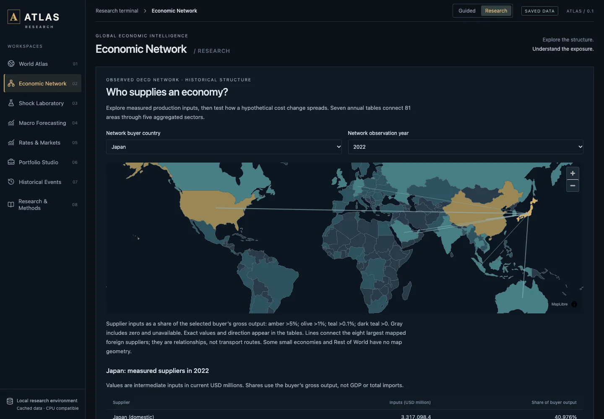

ATLAS
How does a cost shock in one industry spread through the global economy?
A local-first economic research terminal that connects country data, production networks and reproducible PyTorch models. Explore an economy, trace its dependencies, run a hypothetical cost shock through them, and inspect the evidence behind every number. It runs on your own machine: no hosted services or credentials, no external calls at startup, and data refreshes only when you ask.

Problem
Make global economic data and the dependencies between industries understandable, while keeping three things clearly apart: observed history, hypothetical scenarios and learned predictions.
Data
- Countries: 42,900 World Bank World Development Indicators (WDI) records covering gross domestic product (GDP), population, growth and trade openness from 1960 to 2024, plus a 2025 cache of 660 records, on 177 Natural Earth geographies. Every observation carries its source, retrieval date and missing-value flag.
- Production network: seven annual Organisation for Economic Co-operation and Development (OECD) Inter-Country Input-Output (ICIO) tables for 2016–2022, aggregated to 405 nodes (81 areas × 5 groups). All seven networks reconcile within tolerance with spectral radii below 1, and an audit of the raw tables matched six transaction blocks within 0.0000001 million US dollars.
- Pipeline: raw downloads go to an immutable, hashed cache, then are validated and normalized into Parquet and SQLite, queried with DuckDB and served by FastAPI.
What I built
- Scenario Studio: combined production-cost shocks on the 405-node network, solved with PyTorch (
p = solve(I − αAᵀ, s)), with round-by-round transmission, source attribution computed with automatic differentiation and checked against finite differences, pass-through sensitivity from 0 to 100%, and export of 81 country and 405 node results. - Graph research: six trained PyTorch graph and no-graph models on the 405 nodes (train 2018–2020, validate 2021, test 2022), with a view that replays them against held-out data and baselines.
- Macro forecasting: compact PyTorch gated recurrent unit (GRU) models with Gaussian outputs (354 parameters), six saved checkpoints, three baselines, an ablation and held-out diagnostics.
- Rates and portfolios: 694 observed daily Treasury par curves (2024–2026) with hypothetical coupon-bond valuation, duration, convexity and yield-shift repricing; a portfolio studio for uploaded return series with volatility, drawdown, Conditional Value at Risk (CVaR), minimum-variance and CVaR allocation, and a walk-forward mode with drifting holdings and costs at every rebalance.
- Events: 30 dated Federal Reserve and European Central Bank (ECB) releases with source links and GDP context.
- Interface and release: a React and TypeScript interface with an offline MapLibre map, ECharts and accessible table alternatives, in guided and research modes, served with the application programming interface (API) by one FastAPI process. A release gate replays six GRU models across 10 targets and six graph models across 405 nodes and checks every source and evaluation hash before startup.

Results
Retrospective experiments, not a tradable backtest. Lower mean absolute error (MAE) is better.
| Model | MAE |
|---|---|
| GRU, best of three seeds | 1.1803 |
| Ridge regression | 1.3091 |
| Training-period mean | 1.3626 |
| GRU, other two seeds | 1.3959 · 1.4982 |
| Persistence (last year's growth) | 2.0002 |
| Model | MAE |
|---|---|
| Ridge regression | 9.3973 |
| Graph models, three seeds | 9.4850 · 10.2392 · 10.9011 |
- Release v0.1.2 passed 44 backend tests and 27 Chromium browser tests against a production build, with all 12 checkpoints replayed. Continuous integration (CI) passed on Ubuntu, macOS and Windows, and an offline check passed with every non-local request blocked.
- Local latency medians on one machine: 11.00 milliseconds for a 405-node scenario and 40.51 milliseconds for a GRU replay. Loading the population overlay on demand cut the main JavaScript bundle from 777.24 to 561.01 kilobytes compressed, about 28% smaller.
What didn't work
- The GRU does not consistently beat ridge regression or the training mean: one seed did, two did not, on only 10 held-out years.
- Ridge was best in the graph experiment; the graph beat the no-graph version on 1 of 3 seeds. With one test year, this is feasibility evidence only.
- World Bank history is revised data without vintages, so no point-in-time backtest is possible, and OECD relationships end in 2022.
- Not built yet: a causal oil and monetary model, a bridge from shocks to markets, a release-vintage dataset and an extension for exchange-traded funds and events.
Run it locally
Download and extract the release, open its folder, then run npm ci, npm run setup and npm run atlas, and open http://127.0.0.1:8000. Requires Node 22 or later, Python 3.12 or 3.13 and a browser with WebGL2. Installation needs internet access; normal use runs on bundled data. It stays on the local machine until authentication exists.
Python · FastAPI · DuckDB · Parquet · SQLite · NumPy · SciPy · CVXPY · PyTorch · React · TypeScript · Vite · MapLibre · ECharts · pytest · Playwright · GitHub Actions